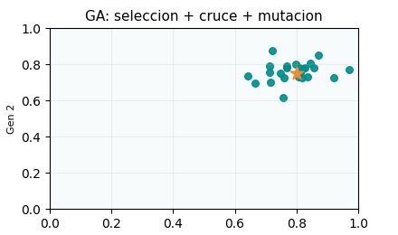
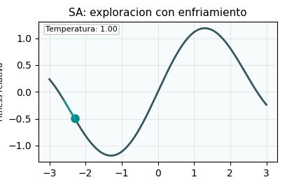
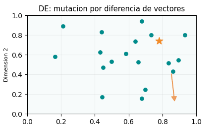
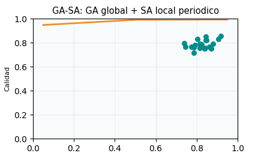
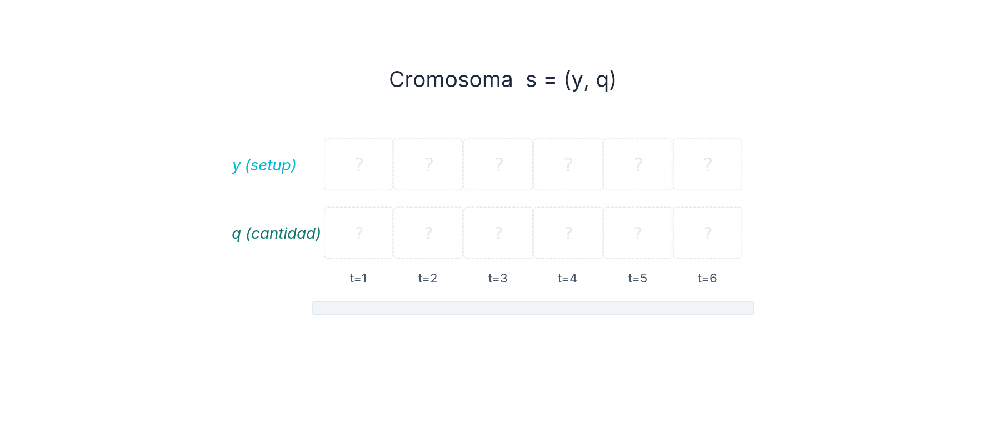
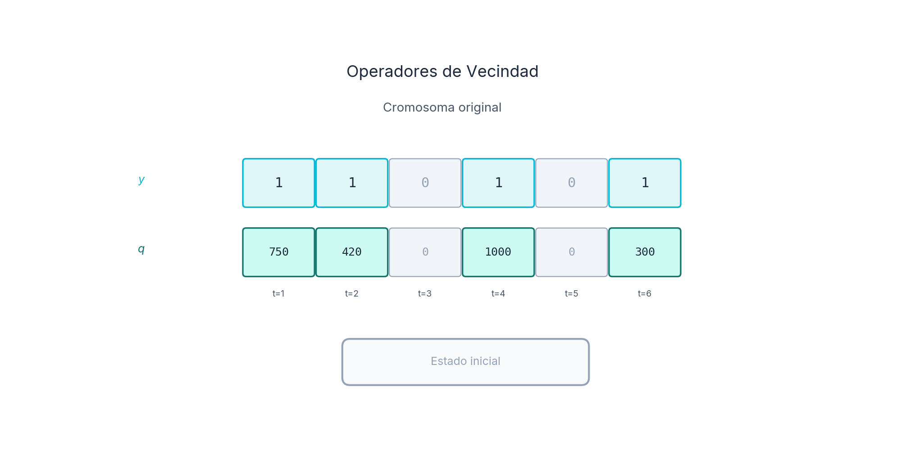
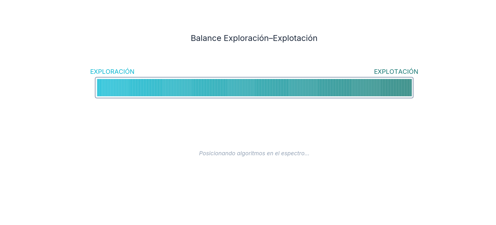
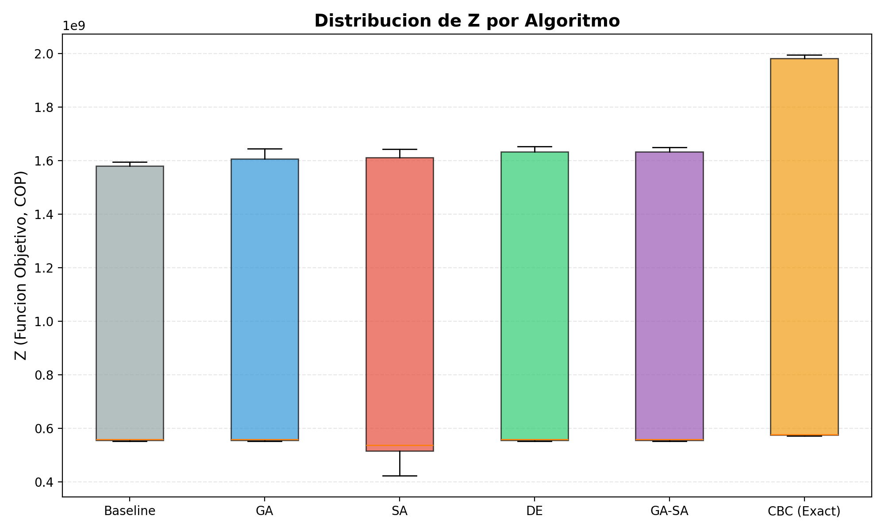
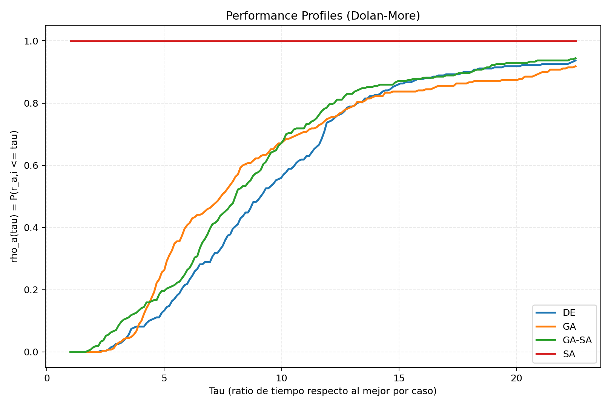
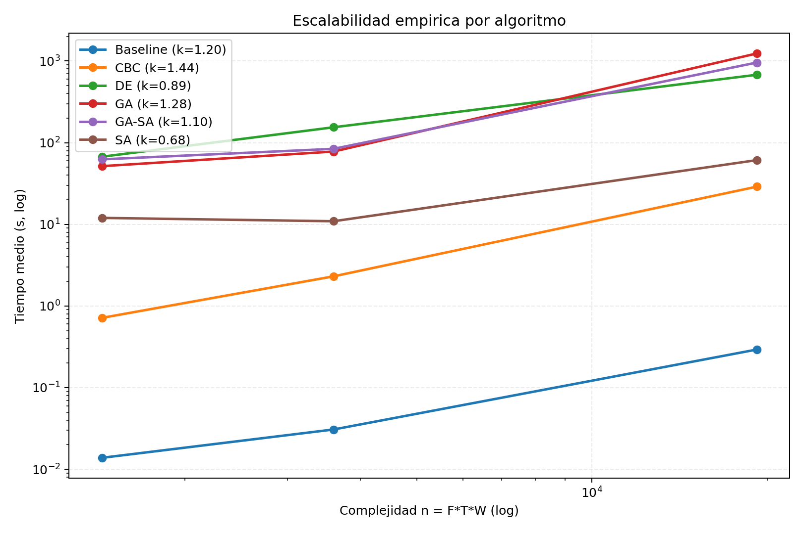

Modelo de Optimización para la Planificación de Coproductos con Metaheurísticas en la Industria Avícola
Daniel Andrés Castañeda Rodríguez
Directora: Ing. Eliana Mirledy Ocampo Toro, PhD.
Maestría en Investigación de Operaciones y Estadística — UTP, 2026
Agenda
- Contexto de la industria avícola
- Problema e hipótesis
- Objetivos
- Marco teórico
- Estado del arte
- Modelo matemático
- Diseño experimental y metaheurísticas
- Resultados y validación
- Conclusiones y trabajo futuro
1. Contexto: Industria Avícola Colombiana
Toneladas de pollo procesadas por año (FENAVI 2023)
Coproductos por carcasa (pechuga, muslo, ala, etc.)
CLSP estocástico con setup, perecibilidad y coproducción
Baseline vs GA-SA vs CBC exacto
Comparación de Z medio (M COP) por tamaño de instancia.
2. Problema: Dinámica Push vs Pull
Push (Oferta)
- Oferta rígida por anatomía de la carcasa.
- Proporciones fijas de coproductos (αp).
- No se puede producir solo pechuga.
Pull (Demanda)
- Demanda estacional y heterogénea por corte.
- Pechuga alta demanda, ala baja rotación.
- Perecibilidad: vida útil Lp ∈ [3,7] periodos.
Consecuencias del desbalance
| Consecuencia | Descripción | Impacto |
|---|---|---|
| Inventario excesivo | Productos de baja rotación se acumulan | Costos de almacenamiento |
| Pérdida por perecibilidad | Producto vencido = pérdida total | Reducción de margen |
| Demanda insatisfecha | Cortes de alta demanda agotados | Pérdida de ventas |
3. Justificación del Estudio
Relevancia Económica
| Consecuencia | Impacto estimado | Fuente |
|---|---|---|
| Costos de inventario excesivo | +15–25% del costo total | Sel et al. 2015 |
| Pérdidas por ventas de liquidación | −20–40% del margen | Amorim et al. 2014 |
| Desperdicio de producto perecedero | 5–10% de la producción | Claassen 2016 |
| Penalización por demanda insatisfecha | Variable por contrato | Solano-Blanco 2022 |
Alineación ODS
- ODS 9 (Industria, Innovación e Infraestructura): Aplicación de técnicas avanzadas de optimización a la industria colombiana.
- ODS 12 (Producción y Consumo Responsables): Reducción del desperdicio alimentario mediante planificación óptima.
Relevancia Metodológica
- Primer framework que combina lot-sizing estocástico + coproductos + perecibilidad + metaheurísticas en la industria avícola.
- Benchmark reproducible con instancias calibradas con FENAVI/DANE.
4. Pregunta de Investigación e Hipótesis
¿Cómo optimizar la planificación de producción de coproductos avícolas bajo demanda estocástica, minimizando costos de inventario y maximizando el beneficio?
Lectura metodológica
- Baseline: comparador de impacto operativo/negocio.
- CBC exacto: comparador técnico de calidad (gap).
- Objetivo: escalar con buena calidad, no superar al exacto.
5. Objetivos
Objetivo General
Desarrollar un modelo de optimización para la planificación de coproductos en la industria avícola colombiana, resuelto mediante metaheurísticas.
OE1. Formular un modelo MILP multi-periodo con lot-sizing estocástico.
OE2. Implementar GA, SA, DE y el híbrido GA-SA.
OE3. Calibrar hiperparámetros con Optuna (TPE).
OE4. Comparar rendimiento en 9 instancias con 30 semillas.
OE5. Validar con datos FENAVI/DANE y análisis de sensibilidad.
6. Marco Teórico
Producción Conjunta
- Despiece genera P coproductos en proporciones fijas αp.
- Decisión sobre un corte implica producción de todos los demás.
- Clasificación OR: mezcla multi-producto con restricciones de co-producción (Gicquel & Miègeville, 2017).
CLSP Estocástico + Perecibilidad
- NP-hard demostrado formalmente (Florian et al. 1980; Bitran & Yanasse 1982).
- Extensión estocástica preserva NP-hardness (Rahmani et al. 2025).
- Variables: setup binario yt, lote continuo qt, inventario Iptω.
- Perecibilidad: vida útil Lp con política FIFO (Entrup et al. 2005).
Prog. Estocástica 2 Etapas
- 1ª etapa (here-and-now): setup yt y producción qt.
- 2ª etapa (wait-and-see): ventas vptω, inventario Iptω por escenario ω ∈ Ω.
- F.O.: maximizar beneficio esperado sobre todos los escenarios (Birge & Louveaux, 2011).
Metaheurísticas (Clasificación)
- Trayectoria (SA): intensificación local, aceptación probabilística de Boltzmann.
- Población (GA, DE): diversificación global, operadores evolutivos.
- Híbridos meméticos (GA-SA): exploración GA + explotación SA cada k generaciones.
Justificación del enfoque
Lote mínimo + setup + perecibilidad + estocasticidad: el problema es formalmente NP-hard (Mahdieh et al. 2018), haciendo intratables los solvers exactos en instancias grandes (72,060 variables). Las metaheurísticas ofrecen soluciones de alta calidad en tiempo polinomial.
7. Estado del Arte
Búsqueda sistemática Scopus (feb. 2026): 8 queries temáticas → 478 resultados → 13 papers en la intersección directa.
Q7 (reviews multi-product lot-sizing estocástico) = 0 resultados.
Queries Scopus y Resultados
| Q | Tema | # |
|---|---|---|
| Q1 | Lot-sizing estocástico + NP-hard | 9 |
| Q2 | MH + Setup estocástico | 11 |
| Q3 | Perecibilidad + Lot-sizing | 20 |
| Q4 | Optimización avícola/cárnica | 186 |
| Q5 | Prog. estocástica + MH | 218 |
| Q6 | CLSP + Complejidad | 30 |
| Q7 | Reviews multi-product estocástico | 0 |
| Q8 | Lote mínimo + Prog. entera | 4 |
| Total | 478 |
| Autor | Año | Enfoque | Vacío |
|---|---|---|---|
| Solano-Blanco et al. | 2022 | MILP estocástico avícola | Sin MH |
| Akbari-Aghghaleh et al. | 2025 | GA-SA SC avícola | Determinista |
| Tahraoui et al. | 2025 | MILP CPLEX avícola | Sin MH |
| Rahmani et al. | 2025 | Híbrido CLSP estoc. | No avícola |
| Claassen | 2016 | Lot-sizing + decay FPI | Determinista |
| Slama et al. | 2021 | GA + Monte Carlo CLSP | Sin coprod. |
Brecha central
Solo 2.7% de 478 papers (13) tocan simultáneamente lot-sizing estocástico + perecibilidad + MH + avícola. Ninguno combina las 4 dimensiones con coproductos.
8. Modelo Matemático
Función Objetivo: Maximizar beneficio esperado
\(\max Z = \frac{1}{|\Omega|}\sum_{\omega}\left[\sum_{p,t} r_p \cdot v_{pt\omega} - \sum_t (c_{prod} \cdot q_t + c_{setup} \cdot y_t) - \sum_{p,t} c_{inv} \cdot I_{pt\omega}\right]\)
Restricciones clave
- Coproducción: \(x_{pt} = \alpha_p \cdot q_t\)
- Setup: \(q_t \leq Q^{max} \cdot y_t\)
- Lote mínimo: \(q_t \geq Q^{min} \cdot y_t\)
- Balance: \(I_{pt\omega} = I_{p,t-1,\omega} + x_{pt} - v_{pt\omega}\)
- Perecibilidad: FIFO con vida útil \(L_p\)
Dimensiones
| Tamaño | T | P | |Ω| | Variables |
|---|---|---|---|---|
| Small | 6 | 8 | 10 | 912 |
| Medium | 12 | 8 | 15 | 6,180 |
| Large | 24 | 8 | 30 | 72,060 |
9. Metaheurísticas Implementadas
GA

Población → selección → cruce → mutación.
SA

Trayectoria con enfriamiento: T₀→Tmin.
DE

Mutación: v = xr1 + F·(xr2 − xr3).
GA-SA (Híbrido)

GA global + SA local cada k generaciones.
10. Esquema de Representación y Decodificador
Aplicación Universal: Este esquema y decodificador es utilizado de manera idéntica por GA, SA, DE y GA-SA.
1. Estructura del Cromosoma (Genotipo)
Vector unificado de 2T genes (dos puntos de decisión por cada uno de los \(T\) periodos). Combina variables de setup binarias (yt) y tamaño de lote continuas (qt):
Restricciones físicas mapeadas a cotas: qt ∈ [Qmin, Qmax].
2. Decodificador Greedy (Fenotipo)
- Reparación factibilidad: Forzar yt = 1 si la demanda supera stock disponible.
- Balance de Masas: Calcular coproductos xpt = αp · qt para cada parte.
- Simulación Estocástica: Computar inventario FIFO a través de |Ω| = 100 micro-escenarios de demanda.
- Perecibilidad: Descartar producto excediendo vida útil Lp (Desecho).
- Fitness: Esperanza matemática E[Z] de la utilidad neta.
Fuentes empíricas: Adaptado de la representación clásica de Lot-Sizing en agroindustrias.
10b. Representación del Cromosoma

Estructura formal
Cada cromosoma s = (y, q) codifica exclusivamente las decisiones de primera etapa:
- Vector binario y: setup de la línea por periodo — \(y_t \in \{0, 1\}\)
- Vector entero q: carcasas a procesar — \(q_t \in [Q^{min}, Q^{max}]\)
- Consistencia: si \(y_t = 0 \Rightarrow q_t = 0\). Si \(y_t = 1 \Rightarrow Q^{min} \leq q_t \leq Q^{max}\)
Espacio de búsqueda: \(|\mathcal{S}| = (1 + Q^{max} - Q^{min} + 1)^{T} \approx 8.7 \times 10^{35}\) para T=12. Enumeración exhaustiva es imposible.
Las variables de 2ª etapa (\(v_{pt\omega}\), \(I_{pt\omega}\), \(u_{pt\omega}\)) no forman parte del cromosoma — se calculan por el decodificador greedy.
10c. Operadores de Vecindad
Mecanismos que definen qué soluciones son alcanzables desde una solución dada en un solo movimiento.

Ntoggle — Exploración estructural
Invierte \(k\) bits aleatorios del vector de setup. Modifica qué periodos producen. Genera saltos largos en el espacio de soluciones.
Nquantity — Explotación local
Perturbación gaussiana \(\mathcal{N}(0, \delta \cdot Q^{max})\) en periodos activos. Ajustes finos en cantidades sin modificar estructura.
Nmixta — Balance adaptativo
Selección probabilística: con \(p_{toggle}\) aplica toggle, con \(p_{quantity}\) aplica cantidad, y con \(1 - p_t - p_q\) aplica ambas. Usado por SA y GA-SA.
10d. Balance Exploración–Explotación

Perfil de búsqueda por algoritmo
| Algoritmo | Exploración | Explotación |
|---|---|---|
| SA | Alta T: aceptación amplia | Baja T: enfriamiento |
| GA | Población + cruce + mutación | Elitismo + torneo |
| DE | Vectores de diferencia | Selección greedy |
| GA-SA | GA global (explorar) | SA local cada k gen. |
Hallazgo clave: GA-SA logra el balance óptimo combinando la diversificación del GA (exploración) con la intensificación del SA (explotación periódica sobre los top-k individuos).
Criterio de Metropolis \(P = e^{\Delta/T}\) actúa como mecanismo de balance adaptativo: acepta empeoramientos controlados para escapar de óptimos locales.
11. Diseño Experimental
Factores y niveles
| Factor | Niveles |
|---|---|
| Algoritmo | 6 (GA, SA, DE, GA-SA, Baseline, CBC) |
| Tamaño | 3 (Small, Medium, Large) |
| Semilla | 30 réplicas independientes |
| Total | 1,098 ejecuciones |
Calibración (Optuna TPE)
- 30 trials por algoritmo sobre 5 instancias de calibración.
- Función objetivo: maximizar Z promedio (3 small + 2 medium).
- Timeout por trial: 900 s, con registro completo de trazabilidad.
Pruebas estadísticas
- ANOVA + Tukey HSD (vista por corridas)
- Friedman + Wilcoxon-Holm (bloques por instancia)
- Contrastes one-sided contra umbral para H1/H2/H3
- α = 0.05
12. Análisis Estadístico Descriptivo
Distribución Empírica (Z Global)
- Varianza inter-instancia: El valor objetivo Z es altamente heterocedástico, dependiendo críticamente de la demanda pico y el tamaño de la instancia.
- Dispersión entre semillas: GA/GA-SA/DE muestran baja variación en small/medium; SA mantiene mayor dispersión en las 9 instancias.
- Ranking práctico: GA-SA y DE lideran en media, con diferencias prácticas pequeñas entre ambos.
Dato analítico: frente a CBC exacto, el gap medio de GA-SA/DE/GA es ~8.1–8.5% (mediana 3.43%); en H2, GA-SA vs mejor MH es -0.02%.

13. Resultados Principales
| Algoritmo | Z̄ (COP) | Std Z | Rank | N |
|---|---|---|---|---|
| GA-SA | 916,865,520 | 512,578,412 | 1 | 270 |
| DE | 916,484,283 | 512,072,980 | 2 | 270 |
| GA | 908,817,120 | 501,216,075 | 3 | 270 |
| SA | 883,217,511 | 522,140,338 | 4 | 270 |
Lectura estadística: ANOVA por corridas p=0.855 (no significativo), pero Friedman bloqueado por instancia p=0.0011 (significativo). Comparaciones Wilcoxon-Holm: SA vs {DE, GA-SA} significativas (p < 0.024). GA-SA ≈ DE en magnitud de efecto (Δ ≈ 0.024%).
Ranking práctico: GA-SA ≈ DE > GA > SA. La varianza inter-instancia domina (~10×) frente a la varianza inter-algoritmo.
14. Análisis Inferencial: Contrastación Formal
Pruebas Globales
| Dócima | Estadístico | P-valor | Significancia (α=0.05) |
|---|---|---|---|
| ANOVA 1-way (corridas) | F = 0.259 | 0.8550 | No significativo |
| Friedman (instancia) | χ² = 16.07 | 0.0011 | Significativo |
| Wilcoxon-Holm (pares) | SA vs DE / GA-SA | < 0.024 | Significativo |
| Shapiro-Wilk | varía | < 0.05 (varios casos) | No normalidad global |
Nota: la vista por corridas queda dominada por heterogeneidad entre instancias; la vista bloqueada por instancia mejora la inferencia para ranking.
H1: Efectividad vs Baseline
No soportada: mejora por instancia de 0.59%–1.10% (p=1.0 frente al umbral 5%). El baseline de capacidad máxima es competitivo.
H2: Sinergia Computacional de GA-SA
Soportada: gap medio = -0.02% (p=0.002 por instancia; p=7.44e-50 por corrida). Diferencia práctica pequeña, pero consistente frente al umbral 2%.
H3: Inventario (primario + secundario)
No soportada (primario): en inventario promedio total no se alcanza 15%. La lectura de baja rotación se mantiene como endpoint secundario exploratorio por n informativo bajo.
15. Perfil Empírico de Complejidad y Escalabilidad
Dolan-Moré: Performance Profile (Eficiencia/Tiempo)

El perfil de desempeño muestra dominancia de SA en tiempo puro y mejor calidad de GA-SA/DE. La lectura es multi-criterio: rapidez y calidad no coinciden en un único algoritmo.
Cota Log-Log: Tiempo vs. Dimensión

Ajustes log-log por algoritmo: exponente empírico \(k \in [0.68, 1.28]\). Con solo 3 tamaños, es evidencia indicativa de escalamiento sub-cuadrático, no una ley definitiva.
16. Convergencia Algorítmica Interactiva
Datos reales: `comparison_traces.csv` y `complexity/convergence_profiles.csv`.
17. Dashboard Comparativo
Ranking global
18. Trazabilidad de Hiperparámetros (Optuna TPE)
Hiperparámetros Óptimos (Tabla 5 tesis)
| Parámetro | GA | SA | DE | GA-SA |
|---|---|---|---|---|
| pop_size | 80 | — | 51 | 39 |
| crossover_rate | 0.744 | — | — | 0.859 |
| mutation_rate | 0.089 | — | — | 0.051 |
| T₀ / cooling | — | 203,952 / 0.782 | — | — |
| F (scale) / CR | — | — | 0.317 / 0.511 | — |
| LS freq / top_k | — | — | — | 9 / 10 |
| stagnation_limit | 50 | 54 | 50 | 50 |
30 trials × 5 instancias calibración × timeout 900 s/trial.
19. Superficie Analítica de Desempeño (Heatmap)
Vista matricial interactiva por combinación algoritmo-instancia (promedios de corridas).
20. Dinámica Estructural del Inventario (Baja Rotación)
Caja intercuartil (Q25-Q75), mediana y bigotes P10-P90 por algoritmo.
21. Frontera de Pareto (Calidad vs. Cómputo)
Cada punto representa una corrida; filtros en vivo por tamaño y algoritmo.
22. Análisis de Sensibilidad (Stress-Testing Económico)
Factibilidad 100% en sensibilidad y respuesta consistente ante variaciones.
23. Robustez Operativa de la Arquitectura
Checklist técnico
- Reparación de factibilidad (y,q) en GA, SA, DE y GA-SA.
- Registro de convergencia en todos los algoritmos.
- Control por estancamiento en GA, DE y GA-SA.
- Factibilidad empírica: 100% en comparación y sensibilidad.
Alertas de validez
- Sin alertas críticas cargadas.
Indicadores operativos
24. Limitaciones del Estudio
Limitaciones Metodológicas
- Datos sintéticos: Instancias calibradas con FENAVI/DANE, pero no son datos operativos reales de planta. La correlación temporal sin desfase es baja (|ρ| ≈ 0.19); con lags mejora a |ρlag| ≈ 0.65.
- Baseline fuerte: Producir a Qmax resulta ser casi óptimo cuando demanda > capacidad, reduciendo el margen de mejora de MH.
- Proporciones fijas: Se asume αp constante; no se modela variabilidad inter-lote en rendimiento de carcasa.
Limitaciones Técnicas
- Sin scheduling: Solo se aborda lot-sizing diario; no el scheduling detallado de la línea de despiece.
- Perecibilidad simplificada: Vida útil discreta (FIFO) sin deterioro gradual de calidad.
Implicación: Estas limitaciones no invalidan los hallazgos, pero definen el alcance de generalidad. La validación con datos operativos reales de planta sigue siendo necesaria.
25. Síntesis y Conclusiones Finales
OE1 (Formular): Modelo MILP multi-periodo validado con CBC. 912–72,060 variables.
OE2 (Implementar): GA, SA, DE, GA-SA con reparación de factibilidad y convergencia.
OE3 (Calibrar): 30 trials Optuna por algoritmo, evaluados en 5 instancias de calibración.
OE4 (Comparar): 1,098 ejecuciones. ANOVA p=0.855, pero Friedman por instancia p=0.0011. Resultado práctico: GA-SA ≈ DE, ambos por encima de SA.
OE5 (Validar): Sensibilidad estable (precios ±12.67%, demanda ±0.35% en gap) y validación externa FENAVI útil: correlación mensual baja sin desfase, pero mejora al considerar lags temporales.
Hallazgo principal: producir a Qmax explica gran parte de la estructura óptima. Las metaheurísticas mejoran consistencia respecto al baseline, pero no superan en tiempo al exacto CBC en este conjunto.
26. Contribuciones y Proyección
Contribuciones
- Modelo MILP original para coproductos avícolas con perecibilidad.
- Framework comparativo con 4 metaheurísticas y baseline riguroso.
- Evidencia empírica sobre GA-SA: confirmación en contexto real de la ventaja híbrida reportada por Akbari-Aghghaleh et al. (2025).
- Conjunto de 9 instancias calibradas con datos FENAVI/DANE, disponibles para benchmarking.
- Código abierto Python reproducible con tests y pipeline Pandoc→PDF.
Trabajo Futuro
- Híbrido DE-SA: Evaluar combinación DE + SA local (Akbari-Aghghaleh 2025).
- Multi-objetivo: NSGA-II/MOEA-D (costo vs nivel de servicio).
- Datos reales: Validación con datos operativos de planta procesadora.
- Scheduling integrado: Lot-sizing + programación detallada (Claassen 2016).
- Aprendizaje por refuerzo: Deep RL para ajuste dinámico de hiperparámetros (Tan et al. 2026; Wang et al. 2026).
- Rolling horizon: Planificación semanal + integración ERP/MRP.
¿Preguntas?
Gracias por su atención
Daniel Andrés Castañeda Rodríguez
Directora: Ing. Eliana Mirledy Ocampo Toro, PhD.